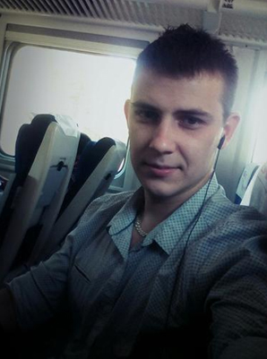

ОБО МНЕ
Мне 26 лет. Живу в г.Барановичи, Брестская область. Готов на переезд.
- Образование: высшее
- Специальность: инженер-программист
- ВУЗ: Барановичский Государственный Университет (2009-2014)
- Военная служба (2014-2015)
Ответственен, исполнителен, усидчив, быстрая обучаемость, готов много работать. Характер не конфликтный. Постоянно совершенствую свои знания, слежу за последними изменениями в IT технологиях.
Минимальный уровень заработной платы 800 рублей.
Интересует только официальное трудоустройство.
ПРОФЕССИОНАЛЬНАЯ ДЕЯТЕЛЬНОСТЬ
С августа 2014 по июнь 2017 работа на должности инженер-программист в Барановичском зональном центре гигиены и эпидемиологии.
Обслуживал локально-вычислительную сеть (ЛВС) предприятия на 100 рабочих мест. Обеспечивал бесперебойную работу офисной и компьютерной техники, программного обеспечения.
В этот же период начал самостоятельно изучать и практически применять знания в области веб разработки (Html, Css, Bootstrap, JavaScript, AJAX, Angular, Scss, Gulp, Git) в качестве фрилансера, оказывая услуги по созданию и сопровождению сайтов физическим и юридическим лицам по договору подряда.
C февраля 2018 по май 2018 работа на должности системного администратора оптово-логистического центра "С-видео". Основным направлением на данной ваканси было обслуживание, настройка и монтаж систем видеонаблюдения, обслуживание локально-вычислительных сетей и сопровождение персональных компьютеров.
Я НА ФОТО
